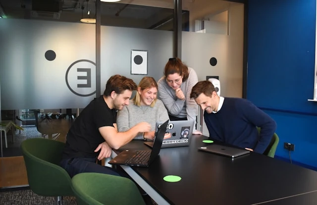

How a cohort actually runs, start to finish
Not a syllabus PDF — the real operating rhythm: what a week looks like, who's reviewing your work, how you're assessed, and who's there when you're stuck at 11pm.

"We didn't design a course. We designed a week you repeat twelve to twenty-eight times, each one slightly harder than the last."
— Stackly curriculum teamLive touchpoints with a mentor or instructor every single week
Mentor-to-rider ratio during project review sessions
Maximum time before a submitted checkpoint gets written feedback
Six stages, one continuous line
Scroll through it the way a rider actually moves through it — nothing here happens out of order.
Enrollment & orientation
You get platform access, a pre-reading pack, and a 15-minute call with your cohort coordinator a week before Day 1 — so the first live session isn't the first time you've logged in.
Foundations sprint
The first two to four weeks level the cohort. Whether you walked in cold or already knew half the tools, everyone leaves this sprint able to build the same starter project unassisted.
Guided build cycles
The bulk of the track: two-week cycles, each ending in a working feature or artifact, reviewed the way a senior teammate reviews a pull request — line by line, not just pass or fail.
Specialization sprint
You pick one elective lane inside your track and pair with a mentor who works in that specialty today, not one who taught it five years ago.
Capstone & panel review
One substantial build, presented live to a three-person panel that includes at least one hiring partner. You defend your decisions, not just demo the output.
Alumni & placement support
Cohort access doesn't end at graduation. Resume reviews, mock interviews, and referrals into the hiring-partner network continue for twelve months after your capstone.
What an ordinary week actually looks like
The topic changes every cycle. This shape doesn't — it's the same five days from week one to your capstone.
Live session
90-minute instructor-led walkthrough of the week's core concept, recorded and posted within a few hours for anyone who couldn't attend live.
Build block
Self-paced project work in the sandbox environment, with two mentor office hours open for anyone stuck on a specific problem.
Peer review
Small groups of four exchange in-progress work and give structured feedback before anything reaches a mentor — most bugs get caught here first.
Checkpoint
You submit the week's build. A mentor reviews it against a written rubric within 48 hours, with inline comments, not just a score.
Async support
The cohort channel stays open around the clock — most questions posted before midnight get a peer or mentor reply before you're back online.
Office hours run twice a week — dropping in is optional, but most riders use at least one.
Friday checkpoints are submitted straight from the platform — no separate tools or file uploads to manage.
One login, everything you actually need
No juggling five separate tools for video, code, feedback, and community — it's one platform end to end.
Live sessions, always recorded
Every live session is posted with searchable timestamps within a few hours, so missing one never means missing the material.
In-browser sandbox labs
Track-specific environments — a code editor, a Jupyter workspace, or an AWS sandbox — pre-configured so you're building in minutes, not fighting local setup.
Cohort community
A dedicated channel per cohort and per track elective, moderated by mentors, where async questions rarely sit unanswered overnight.
Progress & rubric tracker
Every checkpoint, rubric score, and mentor comment lives in one timeline, so you always know exactly where you stand against the track's benchmarks.
Mentors who work the job today, not the job a decade ago

"I don't grade like a teacher. I review like the senior engineer I actually am — if I wouldn't approve this in a real pull request, I don't approve it here either."
Priya Ramesh
Staff Data Scientist, Cortex Analytics · Mentors DS‑310
Every mentor is currently working in the field they teach — not a former practitioner, a current one.
You keep the same primary mentor for the full track, so feedback compounds instead of resetting each cycle.
A second mentor independently reviews every capstone, so no single opinion decides whether you're ready.
Assessment that mirrors the job, not an exam hall
No multiple-choice finals. Every checkpoint is judged the way your work will actually be judged once you're hired.
Rubric-scored checkpoints
Each build is scored against a written rubric shared with you in advance — no surprise criteria, no moving goalposts.
Mentor code & work review
Line-by-line comments on your actual submission, the same review style used on a real engineering or analytics team.
Capstone panel defense
You present and answer live questions from a three-person panel — assessing not just what you built, but why you built it that way.
Guided catch-up weeks
Miss a checkpoint's bar and you get one structured catch-up week with extra mentor time before the cohort moves on without you.
Support built for the 11pm problem, not just office hours
Most learning platforms assume you'll only get stuck during business hours. Ours doesn't.
Peer cohort channel
Most technical questions get a peer reply within the hour — you're rarely the only one stuck on the same bug.
Mentor office hours
Two scheduled sessions a week per track, plus async questions answered within 48 hours outside of live hours.
Career coaching
One-on-one resume reviews and mock interviews open from your specialization sprint onward, not just after graduation.
Questions about how it runs
One live instructor session a week is core to every track, plus scheduled mentor office hours. Everything live is recorded, but the checkpoint reviews, peer feedback, and community support happen in real time regardless of whether you attend live.
You get one guided catch-up week with extra mentor time before the cohort schedule moves on. It's built into every track — falling behind once isn't treated as failing the program.
No. Track-specific sandbox environments run in the browser, pre-configured with the tools you need. A stable internet connection and a modern browser are the only requirements.
Yes, for weekly checkpoint review. Your capstone gets an independent second reviewer as well, so the assessment at the end isn't resting on a single relationship.
Against a written rubric shared with you before you start the build — covering correctness, code or work quality, and how well you handled edge cases. You'll always know the bar before you're measured against it.
No — resume reviews, mock interviews, and hiring-partner referrals continue for twelve months after your capstone, through the same platform and mentor network you used during the track.